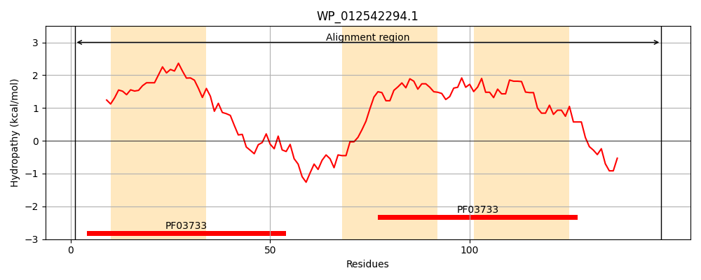
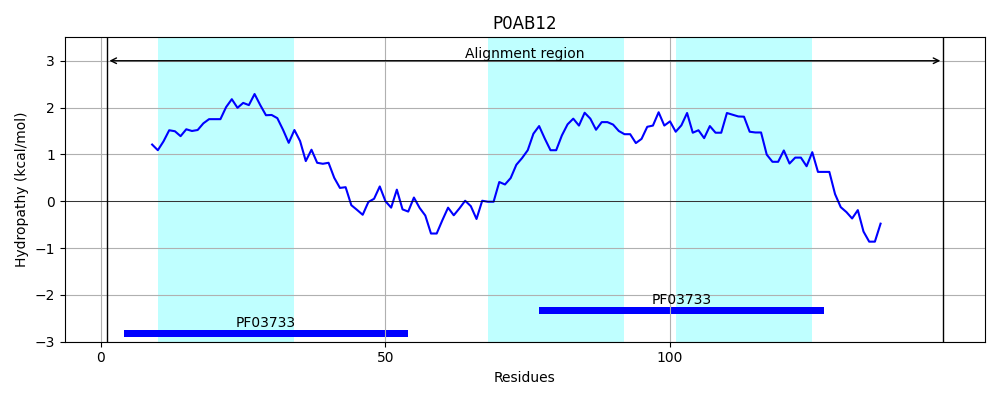
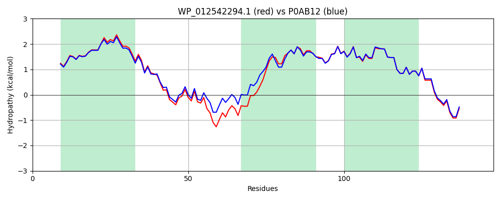

Hit Accession: P0AB12
Hit TCID: 9.B.55.1.1
Hit Description: gnl|BL_ORD_ID|8690 gnl|TC-DB|P0AB12|9.B.55.1.1 Inner membrane protein YccF OS=Escherichia coli (strain K12) GN=yccF PE=1 SV=1
Mach Len: 148
e:0.000000
Query TMS Count : 3
Hit TMS Count: 3
TMS-Overlap Score: 3.750000
Predicted Substrates:None
BLAST Alignment:
Score: 686 , Bit scores: 268 bits, E-value: 2.3e-94, Alignment length: 148, Percentage identity: 86
Query: 1 MRTILNILNFILGGFATTLGWLLATLVSIILVVTLPLTRSCWEITRLSLFPYGNEAIHVDELEPGRKNGLLNAGGTVLNILWFIFFGWWLCLMHIFSGIAQCLTIIGIPVGIANFKIAAIALWPVGRRVVSVETARAAREANARRRFQ 148
MRT+LNILNF+LGGFATTLGWLLATLVSI+L+ TLPLTRSCWEIT+LSL PYGNEAIHVDEL P KN LLN GGTVLNI W IFFGWWLCLMHI +GIAQC++IIGIPVGIANFKIAAIALWPVGRRVVSVETA+AAREANARRRF+
Sbjct: 1 MRTVLNILNFVLGGFATTLGWLLATLVSIVLIFTLPLTRSCWEITKLSLVPYGNEAIHVDELNPAGKNVLLNTGGTVLNIFWLIFFGWWLCLMHIATGIAQCISIIGIPVGIANFKIAAIALWPVGRRVVSVETAQAAREANARRRFE 148 | Protein Hydropathy Plots: |
|---|
|  |  |
Pairwise Alignment-Hydropathy Plot:
|
|---|
|  |